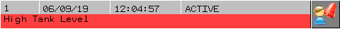

|
|
|
|
|
|
|
|
A double line local alarm banner displays the alarm message in two lines, by state and in order of severity. The first line displays alarm information such as the date and time of the alarm, and the alarm status. You can customize this line to display the information you want. The second line displays the alarm message. Alarm messages can be color coded according to severity and state.

You can resize a double line local alarm banner horizontally, but not vertically. The alarm banner can only show one message at a time. The ACK button is added to the right side of the alarm banner. You can choose other buttons you want to display. The Date, Time, State, and Message are added as the columns to display. You can choose other columns you want to display. You can also configure the alarm banner's touch action. Use an alarm category to display messages from multiple alarm groups.
Double line local alarm banners are predefined alarm summaries with a few properties disabled. Therefore, you configure the properties of a double line local alarm banner the same way you would configure the properties of an alarm summary. For more information on the Alarm Summary and its properties, see Section 16.2.6, Setting Up an Alarm and Event Summary.
Create an alarm group. For more information, see Section 16.3.1.1, Creating Alarm and Event Groups.
Create a variable with its Alarm property enabled. For more information, see Section 16.2.5, Setting Up BOOl Variables, and Section 16.3.3.1, Setting Up Word Alarms.
Click the Alarm Summary icon in the Graphical Objects Parts toolbar, and select Alarm Banner.
Draw the Alarm Banner on the panel.
Double-click the Alarm Banner to open the Alarm Summary Settings Dialog Box and define the properties that are enabled for the alarm banner. For more information on these properties, see Section 16.2.6, Setting Up an Alarm and Event Summary.

The Log mode option is not available for an alarm banner. This allows you to view only one alarm with the highest severity and in the order of state.